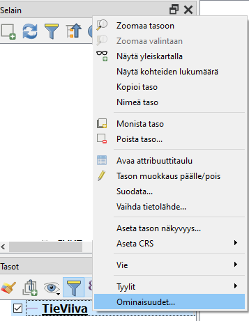
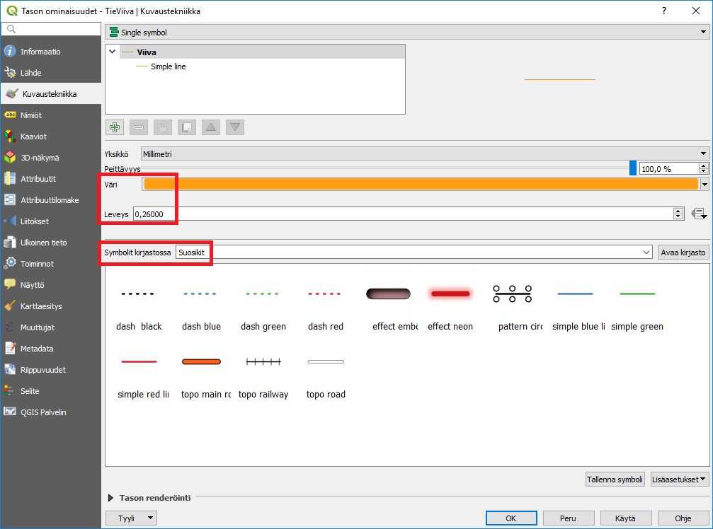
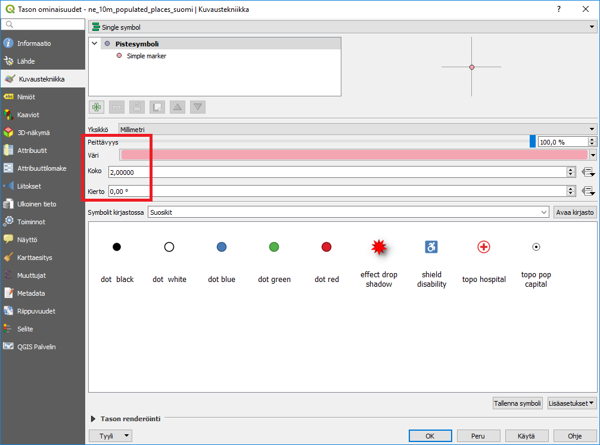
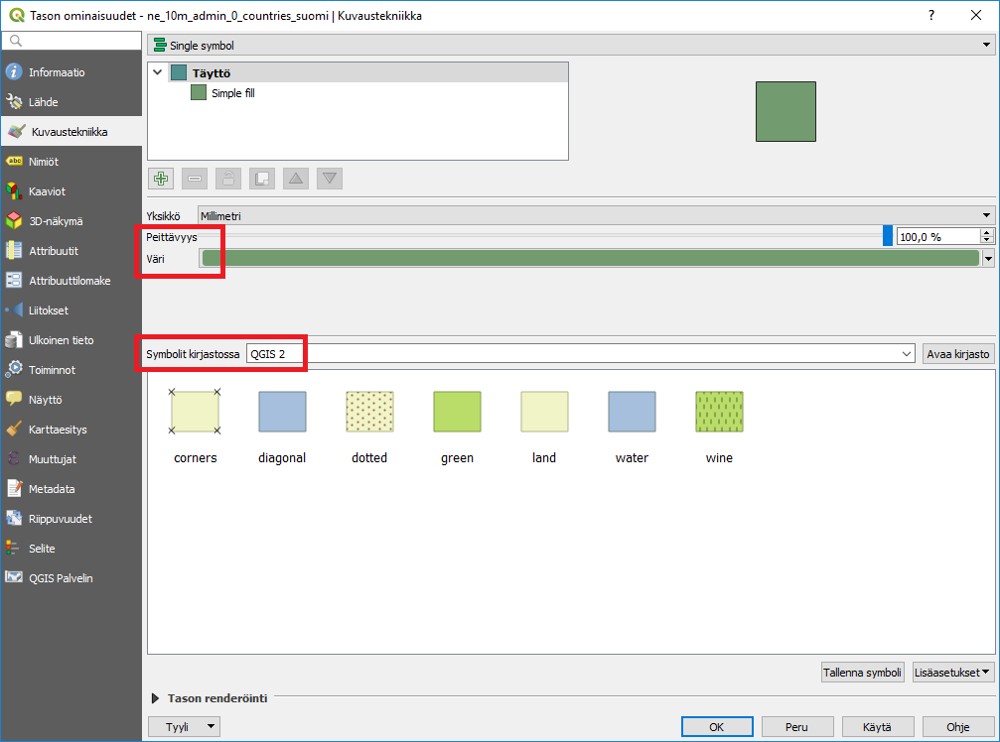
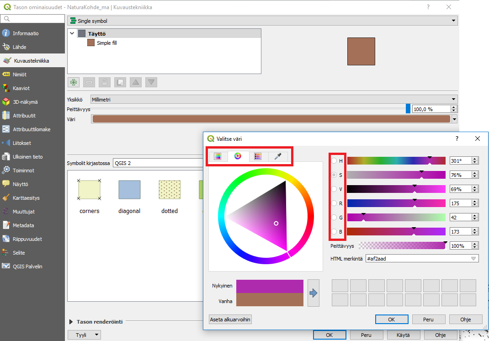
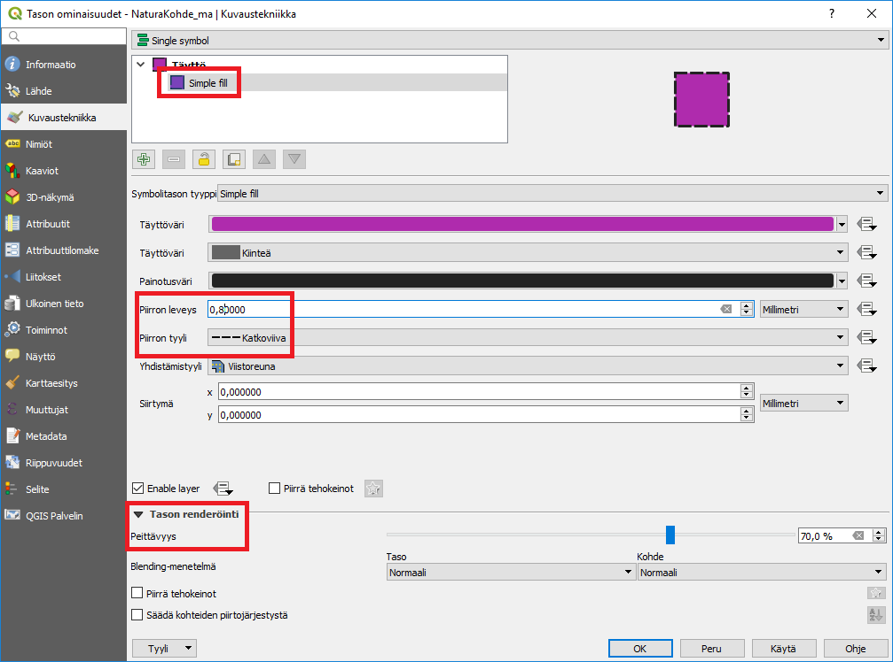
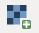
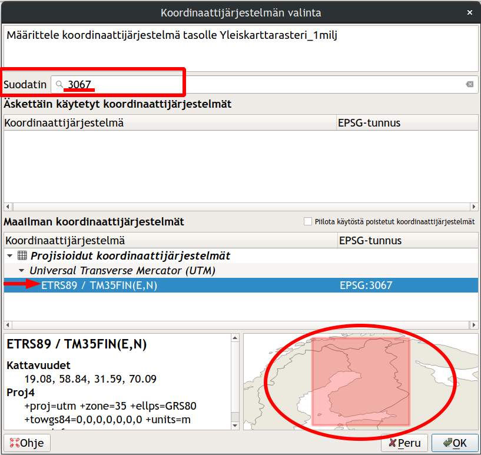
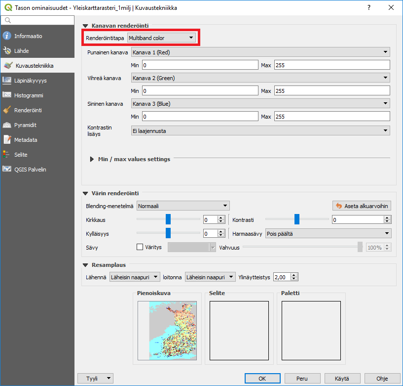

4 Harjoitus 3: Paikkatietoaineiston visualisointi
4.1 Harjoituksen sisältö
Harjoituksessa tehdään visualisoinnit sekä vektori- että rasteriaineistosta.
4.2 Harjoituksen tavoite
Koulutettava oppii eri aineistotyyppien visualisointitapoja.
4.3 Valmistautuminen
Käynnistä QGIS-ohjelmisto. Avaa uusi QGIS-projekti ja tallenna se nimellä (Projekti → Tallenna nimellä…) “QGIS_harjoitus_3”.
4.4 Vektoriaineistojen visualisointi
Aloita tutkimalla edellisessä harjoituksessa avattua tiestötasoa. Jos teit uuden QGIS-projektitiedoston, lisää taso painamalla Lisää vektoritaso -painiketta ja selaamalla tiedostoon …/kurssihakemisto/MML/YK_1M/TieViiva.shp. Paina hiiren oikealla painikkeella tason nimeä (TieViiva) tasoluettelossa. Valitse valikosta Ominaisuudet:

Tason ominaisuudet -ikkuna aukeaa. Huomaa vasemmalla oleva sivupalkki, josta löytyy eri ominaisuudet jaoteltuna aihekohtaisesti. Samaisessa sivupalkissa on Kuvaustekniikka-alamenu, jonka valittuasi pääset muokkaamaan tason tyyliominaisuuksia:

Vaihda Väri- ja Leveys-arvot, ja paina Käytä. Sillä tavalla saat näkyviin tekemäsi muutokset sulkematta Tason ominaisuudet -ikkunaa. Avaa vielä jokin symbolikirjasto, esimerkiksi Suosikit, ja muuta viivan tyyliksi jokin sinua miellyttävä tyyli. Paina sitten OK, ikkuna sulkeutuu ja tiestö-taso näkyy nyt määrittämäsi visualisointityylin tavalla. Muut paikkatietoaineistojen visualisoinnin työkalut saa käyttöön samalla tavalla, avaamalla hiiren oikealla Properties ja sivupalkista Kuvaustekniikka. Eri vektoriaineistotyypeillä (piste, viiva, monikulmio) on erilaiset kuvaustekniikan työkalut, vaikkakin ne muistuttavat paljon toisiaan. Esimerkiksi pistetasolle ei voida tehdä samoja tyylittelyjä kuin viiva- tai monikulmiotasolle. Rasteriaineistojen työkalut taas eroavat melko paljon vektoriaineistojen työkaluista. Katsomme näitä myöhemmin tässä harjoituksessa.
Lisätään nyt toinen vektorimuotoinen aineisto QGIS-projektiimme. Käytä samaa työkalua kuin edellisessä harjoituksessa: avaa siis uusi taso painamalla Lisää vektoritaso -näppäintä. Etsi …/kurssihakemisto/NaturalEarth/ne_10m_populated_places/ hakemistosta aineisto nimellä ne_10m_populated_places_suomi.shp. Tämä aineisto sisältää NaturalEarth-kaupunkiaineiston Suomesta. Avaa pistetason kuvaustekniikkaikkuna samalla tavalla kuin äsken viivatason yhteydessä. Huomaa erot viiva- ja pistetason kuvaustekniikan määrittelyissä:

Vaihda pisteen Väri ja Koko ja paina taas Käytä. Pikanäppäimellä F7 saat avatuksi Tason tyylit -ikkunan, joka on jatkuvasti avoinna karttaikkunan oikeassa laidassa. Tällöin voit helposti vaihtaa kaikkien tasojen kuvaustekniikkaa ja näet heti, miltä uusi tyyli näyttää. Vaihda symbolia ja kokeile myös, miten Kierto vaikuttaa symbolin näkymiseen.
Toistetaan samat asiat vielä monikulmiotason kanssa. Avaa nyt toinen NaturalEarth-aineisto, jossa on Suomen alue erotettuna. Etsi ne_10m_admin_0_countries-hakemistosta ne_10m_admin_0_countries_suomi.shp

ja lisää aineisto projektiin. Avaa sen kuvaustekniikkaikkuna ja huomaa erot verrattuna piste- ja viiva-aineistojen ominaisuuksiin. Muokkaa tason väriä Väri-kohdasta ja valitse tasolle jokin symboli haluamastasi kirjastosta. Voit myös kokeilla eri Peittävyys-arvoja. Paina Käytä ja kun olet testannut tarpeeksi, paina OK.
Saattaa olla, että aineistotasot peittävät toisensa vaikka siten, että monikulmio aineisto peittää muut sen alle jäävät aineistot. Kokeile muuttaa tasojen keskinäistä järjestystä ja siten tasojen näkymistä raahaamalla/vetämällä tasot uuteen järjestykseen Tasoluettelossa. Useimmiten monikulmiotasot on hyvä jättää alimmiksi tasoiksi. Jos kartalla halutaan visualisoida jotakin rasterikuvaa, kannattaa se/ne yleensä pitää myös alimpina tasoina. Uudelleen järjestettynä karttasi näyttää tältä:

Voit myös piilottaa tai näyttää tasoja painamalla tason nimen vasemmalla puolella olevaa ruutua.
4.5 Monikulmioaineiston edistynyt visualisointi
Lisää QGIS-projektiin uusi paikkatietoaineisto: käytämme tässä harjoituksessa Suomen ympäristökeskuksen Natura2000-aluetietoaineistoa. Lisää kurssihakemistosta vektoriaineisto: …/kurssihakemisto/SYKE/Natura2000/NaturaKohde_ma.shp-tiedosto QGIS-projektiin.
Ensimmäiseksi muutamme vektoriaineiston väriä. Avaa tason Properties → Kuvaustekniikka ja klikkaa Väri-kohdassa olevaa väripalkkia. Valitse haluamasi väri vektoriaineistolle. Huomaa, että voit määritellä värit arvo HSV- (Hue, Saturation, Value) tai RGB-arvoilla (Red, Green, Blue). Peittävyys-arvolla säädät värin läpinäkyvyyttä. Kokeile myös Värikarttaa, Väripyörää ja Liukuväri (välilehdet). Valittuasi sopivan värin, paina OK. Paina sen jälkeen Properties-ikkunasta Käytä. Näin Properties-ikkuna pysyy auki ja voit katsoa tyylien muutoksia karttanäkymässä. Kun olet valinnut haluamasi värin, paina OK.

Avaa uudelleen tason Properties-ikkuna. Kuvaustekniikka-asetuksista, valitse ensin Simple fill oheisen kuvan mukaisesti:

Sen jälkeen valitse reunaviiva katkoviivaksi kohdasta Piirron tyyli. Viivan paksuudeksi voit määritellä 0,8 millimetriä. Lopuksi voit vielä määritellä Tason renderöinti -kohdasta (valikko aukeaa pientä nuolta klikkaamalla) Peittävyys-kohtaan arvoksi 70%.
4.6 Rasteriaineistojen visualisointi
Tutustutaan nyt rasteriaineistoihin. Avaa uusi, tyhjä QGIS-projekti ja lisää uusi aineisto napauttamalla Lisää rasteritaso –pikakuvaketta vasemmasta sivupaneelista: 
Etsi datahakemistosta Yleiskarttarasteri_1milj.png, joka on …/kurssihakemisto/MML/-kansiossa. QGIS ilmoittaa, että aineiston koordinaattijärjestelmä on tuntematon, ja olettaa koordinaattijärjestelmäksi WGS84. Aseta rasteriaineiston koordinaattijärjestelmäksi ETRS89- / ETRS-TM35FIN. Klikkaa tason nimeä hiiren oikealla napilla, valitse Properties ja Lähde-välilehti. Etsi tasokoordinaattijärjestelmä (projisoidut koordinaattijärjestelmät) EPSG:3067 - ETRS89- / ETRS-TM35FIN ja paina OK:

Tämä rasteriaineisto on MML:n tuottama taustakartta, johon on sisällytetty Suomen tiet, kaupungit ja muita yleiskartan tarkoitusta ajavia aineistoja. Käytetty visualisointi on tuttu paperikartoilta. Avaa nyt rasteritason Kuvaustekniikka-ikkuna samalla tavalla kuin vektoriaineistojen kanssa. Huomaa erot työkaluissa ja ominaisuuksissa rasteri- ja vektoriaineistojen välillä.

Kokeile vaihtaa rasterin kuvaustekniikan asetuksia. Renderöintitapa sisältää erilaisia rasteriaineistojen visualisointikeinoja, esimerkiksi Multiband color -visualisointitavassa käytetään kolmea eri näkyvän valon kanavaa (R=red, G=green, B=Blue eli RGB) rasterikuvan visualisoimiseen. Väriarvoja muokkaamalla voidaan muokata tapaa, jolla rasterikuvan pikselit näkyvät kartalla. Lisäämänne rasteriaineiston (yleiskarttarasteri) visualisointi on asetettu siten, että se näyttää parhaimmalta, jos kanavat asetetaan seuraavalla tavalla: punainen kanava on kanava 1, vihreä kanava on kanava 2 ja sininen kanava on kanava 3. On tärkeä hahmottaa tapa ja logiikka, jolla rasteriaineistoja visualisoidaan. Kokeile nyt vaihtaa kanavien järjestystä. Muista, että painamalla Käytä voit kurkistaa muutoksiin. Voit sillä tavalla kokeilla eri asetuksia sulkematta Tason ominaisuudet → Kuvaustekniikka-ikkunaa.
Eri kanavien kuvaustekniikoiden muuttamisella on merkitystä esimerkiksi orto- ja satelliittikuvia tarkasteltaessa. Visualisoimalla näkyvän valon kanavat eri tavoin voidaan havaita ilmakuvista jotain, joka muuten jäisi huomaamatta. Lisäksi satelliittikuva-aineistot saattavat sisältää muitakin kuin näkyvän valon aallonpituuksia, esimerkiksi lähi-infrapunakanavan, joka täytyy visualisoida jollain näkyvällä värillä ennen kuin sitä voidaan tarkastella.
Psst! Muista tallentaa QGIS-projekti harjoituksen lopuksi.